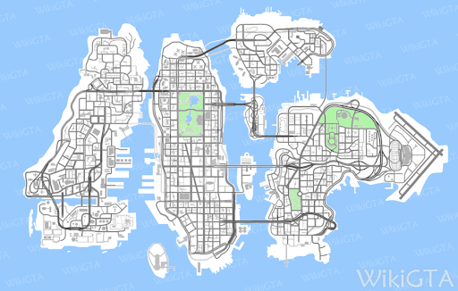
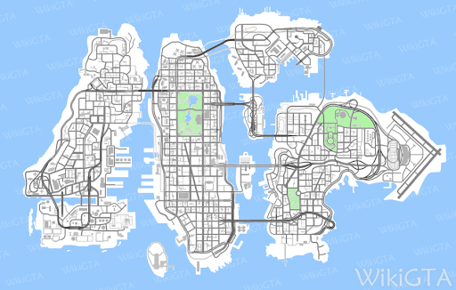

Grand Theft Auto Librity City
In 2008, Niko Bellic, an Eastern European war veteran and former human trafficker, arrives in Liberty City aboard a cargo ship called the Platypus, for multiple reasons: to avoid an old rival, find the man who sold out his unit during the war, and reunite with his cousin Roman Bellic, who invited him to come to the city in the first place, and in his letters told him that he was living a life full of riches, women, sports cars, mansions and luxury. However, as soon as he arrives and meets with Roman, he discovers that all of his cousin's stories were lies: in reality, Roman lives in a heavily-cramped apartment and runs a small taxi service. Niko begins working for Roman's company, soon meeting his girlfriend Mallorie, who introduces him to her friend Michelle, whom he quickly begins to date. Niko also discovers that Roman is heavily in debt and has problems with the loan sharks. He protects him on several occasions, eventually killing Bledar Morina, the head of the Albanian Mob in Broker, after he and his associates attack Roman. Continuing working for Roman, Niko soon meets Little Jacob, the underboss of the Yardies and a good friend of Roman's, whom he helps in dealing with several rival drug dealers, with the pair soon becoming good friends; it is also Jacob that Niko obtains his first weapon from. Niko later meets Vladimir "Vlad" Glebov, Roman's Russian loan shark, who gives him several debt-collecting jobs to keep Roman from sinking into debt. In Vlad's final mission, Niko is tasked with killing Vlad's associate Ivan Bytchkov, but he may choose to spare his life instead (being the first character in the game whose fate can be chosen). Later, Niko learns that Vlad had slept with Mallorie and executes him. Afterwards, he reveals to Roman his real quest in Liberty City: to find and kill the man who betrayed his old unit. Shortly after, Niko and Roman are kidnapped by Mikhail Faustin and Dimitri Rascalov, the leaders of the Russian Mafia in Broker and Vlad's superiors. Faustin is shown to be an absolute hothead, but is not bothered by Vlad's murdered and ends up releasing the pair and employing Niko for several jobs. During his work for Faustin, Niko is introduced by Roman to his friend Brucie Kibbutz and the internet. He performs several jobs for Brucie, along with some car thefts, but eventually quits working for him, although the two remain good friends. Most of Niko's jobs for Faustin involve attacks against Kenny Petrovic, Liberty City's most powerful mobster. After Petrovic threatens to retaliate, Niko later meets with Dimitri privately, who explains that he needs to kill Faustin to make amends with Petrovic. Out of options, Niko assassinates Faustin, after being promised to be paid for the hit by Dimitri. However, when Niko meets Dimitri at a warehouse to collect his money, Dimitri betrays Niko and sells him out to his friend and fellow Russian crime lord Ray Bulgarin, Niko's former employer and the same man that he came to Liberty City to escape from. Niko escapes from the ambush with Little Jacob's help, but Dimitri's men soon burn down both Roman's taxi service and apartment in retaliation.
After losing everything, Niko and Roman move to Bohan, where Niko begins working, on the recommendation of Mallorie, for Manny Escuela, an ego-driven, vigilante who's dedicated to cleaning up the streets of South Bohan, and Elizabeta Torres, a Puerto Rican drug baroness. Niko quickly takes a personal disliking towards Escuela, but working for Torres, he makes new criminal connections, including Irish gangster Patrick McReary, after saving him during a bothced deal, and drug dealer Playboy X, after assisting him and The Lost MC vice-president Johnny Klebitz on a botched heroin deal. Following this failed exchange, the bridges to Algonquin open, granting the player access to the district. Niko soon begins taking on jobs from Playboy, such as taking down a union site for his friend Yusuf Amir. Playboy later introduces Niko to his mentor Dwayne Forge, who was recently released from prison, whom he also works for and helps rebuild his life, quickly forming a bond with him over their tragic past. However, tensions between Playboy and Dwayne begin to rise, and both men eventually ask Niko to kill each other, leaving him with two possible options: murder either Dwayne or Playboy. Should he kill Dwayne, Playboy pays him for the hit, before cutting all ties with him, regreting that he hired Niko to kill his mentor. Should he kill Playboy, Niko becomes good friends with Dwayne, who lets him stay in Playboy's penthouse, revealing that he had the deed to it all along. Niko receives an angry call from Elizabeta, who tells him that Little Jacob sold some of her cocaine to the Angels of Death, and they had ripped both of them off. Niko successfully retrieves the drugs, but when he goes to give them to Jacob, he is surprised to find Michelle, who reveals herself as an undercover government agent actually named Karen, and brings him before her agency, known only by it's cover: United Liberty Paper. Niko is entrapped into working for the agency and is tasked with killing several known or suspected terrorists. In return, the agency clears his criminal record and promises to track down the traitor of his old squad. Niko later visits Elizabeta one final time, who reveals that she is under investigation of the police and fears that she will be arrested soon, just as Manny and his cameraman, Jay Hamilton, walk in and attempt to convince her to stop dealing drugs. In a drug-induced outburst, Elizabeta kills both of them, and then asks Niko to dispose of the bodies. Afterwards, Niko cuts all ties with Elizabeta, and it can be heard on the radio later in the game that Elizabeta was eventually arrested and sentenced to 300 years in prison on multiple charges. At one point, Roman suddenly disappears and Mallorie informs Niko that he has been kidnapped by Dimitri's men. Niko is able to save his cousin, with his hatred for Dimitri only intensifying. Later, Roman's fortunes suddenly improve when the latter receives a large amount of money from an insurance claim he made on his destroyed business. Using the money, Roman buys himself and Niko an apartment in Algonquin, then restarts his taxi company. Niko soon begins working for the McReary family, as he is blackmailed into helping corrupt cop Francis (whom he briefly met during his work for Manny) by killing several people who possess incriminating evidence against him, and assists Patrick on several robberies, most notably that of the Bank of Liberty. Following the robbery, the bridges to Alderney open, unlocking the entire city, and Niko works for the rest of the McReary brothers, namely Derrick, who took part in the heist and is a retired mobster, having recently returned from Ireland (where he ran to hide from the mbo) and employs Niko to deal with several problems from his past, and Gerald, who planned the robbery and is the leader of the Irish Mob, employing Niko to attack the Albanian Mob to ruin the truce between them and the Ancelotti Crime Family, on the Pegorino Family's behalf. During this time, Niko befriends Patrick and develops a relationship with his sister Kate. Francis soon learns that Derrick has returned from Ireland and, fearing that he might rat him out, hires Niko to assassinate him. However, Derrick then calls Niko to tell him that he suspects Francis is trying to kill him and asks him to protect him. This once again leaves Niko with two possible options: kill Francis and Derrick. Regardless, Niko then attends the funeral, fending off several Albanian mobsters who attack it in retaliation for Niko's attacks on them earlier, and either cuts all his ties with Derrick, or blackmails Francis into helping him escape from the police whenever he will need (which lasts only until the end of the storyline). He also learns from Patrick that Gerald was arrested shortly before the funeral. Through Patrick, Niko also meets Italian mobster and Pegorino Family caporegime Ray Boccino, who employs him to assist him with a major diamond dealing scheme. First, Niko and several of Boccino's associates, led by Luca Silvestri, retrieve the diamonds from several trash bags, where they were hidden away by members of The Lost MC after being stolen from nightclub owner Tony Prince. However, Luca and his crew betray Boccino and plan to run away with the diamonds, forcing Niko to kill them in order to retrieve the diamonds. Niko then works with Johnny Klebitz to attempt to sell the diamonds to Jewish Mob representative Isaac Roth, but they are ambushed by Luis Lopez, who steals the diamonds, whilist Johnny escapes with the money in the chaos. Niko later informs Boccino of Johnny's betrayal, and he sends him to kill his best friend Jim Fitzgerald in retaliation, as well as Roth and his men, after they accuse Boccino of the ambush and threaten to retaliate. In exchange for his work for him, Boccino helps Niko track down Florian Cravic, one of the two survivors of his old squad. Niko and Roman confront Florian, who changed his name to Bernie Crane and has become a homosexual, and discover that he is not the traitor, meaning that the one who betrayed the squad can only be the other known survivor: Darko Brevic.
Niko begins helping Bernie with several favours, first killing a man who has attacked him due to his homosexual nature. Afterwards, Niko learns that Bernie is in a secret relantionship with vice-mayor Bryce Dawkins, who is being blackmailed by several men. Niko accompanies Bernie to meet with the men, discovering that they are working for Dimitri, and manages to kill them. However, when Bernie later invites Niko to a peaceful boat ride, they are attacked by more of Dimitir's men, whom Niko also kills. Afterwards, the pair part ways, not before Bernie makes Niko a gift: Bryce's Infernus. Niko is also introduced to Jon Gravelli, the eldery and dying Don of the Gambetti Crime Family - the most powerful of the five Italian Mafia families within the Commission - by United Liberty Paper. Niko performs several jobs for Gravelli, such as protecting a politican from Dimitri's men, or destroying multiple drug vans belonging to the Ancelotti Crime Family, which guarded by Dimitir's men. Grateful, Gravelli promises to help the Paper track down Darko Brevic. Ray Boccino later contacts Niko once again, offering him an apartment in Alderney and introducing him to his friend and associate Phil Bell. Bell employs Niko for several jobs, such as stealing a truck full of heroin from the Triads, and helping him steal the remaining drugs of the Ancelotti Family from Dimitir's men, and later recommends him to his boss, Jimmy Pegorino. Pegorino is concerned about the recent loss in power of his family and, eager to join the Comission, employ Niko to assist him on a deal with the Pavano Crime Family that would hopefully allow him to achieve this goal. However, the Pavano end up double crossing Pegorino and attempt to kill him, but Niko is able to save him, and later is asked to attack a major group of Pavanos as payback. Over time, Pegorino grows more paranoid and believes to be sorrounded by rats, asking Niko to kill his bodyguard Anthony Corrado, who was revealed to be an FIB informant, and later Ray Boccino as well, whom he suspected of being an informant. Around the same time, Niko visits Gerald McReary in prison, who asks him to help Patrick kidnap Gracie Ancelotti, the daughter of Giovanni Ancelotti, the Don of the Ancelotti Family, in order to later ransom her off for the diamonds, which Gerald learned came into the possession of the Ancelotti Family. Niko succesfully kidnaps Gracie, and Patrick later sets up an exchange with the Ancelotti Family, who send Tony Prince and his bodyguard Luis Lopez - who stole the diamonds during Niko's original exchange with the Jewish Mob - to save Gracie. The exchange goes well at first, until Ray Bulgarin arrives and orders his men to kill Niko and retrieve the diamonds. Whilist Tony and Luis flee with Gracie and Bulgarin escapes, Niko and Patrick kill Bulgarin's men, but one of them grabs the diamonds and throws them into a passing garbage truck, leading to them being permanently lost. Afterwards, Niko cuts all his ties with Gerald, who asks him to look after his family. Eventually, United Liberty Paper track down Darko Brevic and bring him to the cargo bay of Francis International Airport, informing Niko, before cutting all ties with him. Niko, accompanied by Roman, finds Darko and, after a tense confrontation, is given the choice of either killing him, which leads to Niko feeling "empty", or sparing and letting him run away, which will cause Niko to feel better.